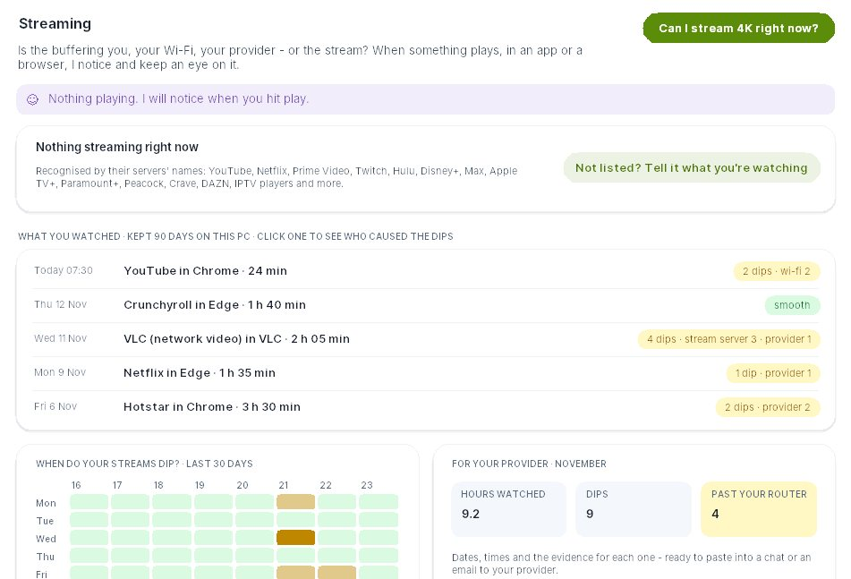

Why did it buffer?
Netflix, YouTube, Prime, Twitch, Crunchyroll, IPTV players - when something plays, in an app or a browser, AdeeboMeter notices and keeps an eye on it. When the picture drops, it tells you whose fault it was.

It notices by itself
By the servers' names Windows already knows - never your tabs, titles or what you watch inside a service. Not listed? Tell it in one line.
Whose fault, every dip
Your PC too busy, your Wi-Fi, your home network, your provider, or the stream's own server - with the evidence beside each one.
90 days of records
Every stream kept on your PC: when it dipped, how long, and why. A grid shows the hours your streams suffer most.
Can I stream 4K right now?
One button: SD, HD, Full HD and 4K - safe, risky or no, judged on a real speed test and your Wi-Fi.
Ready for your provider
Dates, times and the evidence, copied in one click for a chat or an email with your provider.
Learn why
Short lessons and games: how streams adapt, what a CDN is, and how to tell your Wi-Fi from your provider.
It never sees what you watch. It times a tiny connection to the stream's server (no data) every 10 seconds while something plays - and stops trying after six misses if the server ignores it.
Also: AdeeboMeter for trading · AdeeboMeter for gaming · Privacy
AdeeboMeter for Windows · no account, no cloud, no telemetry · runs without admin rights